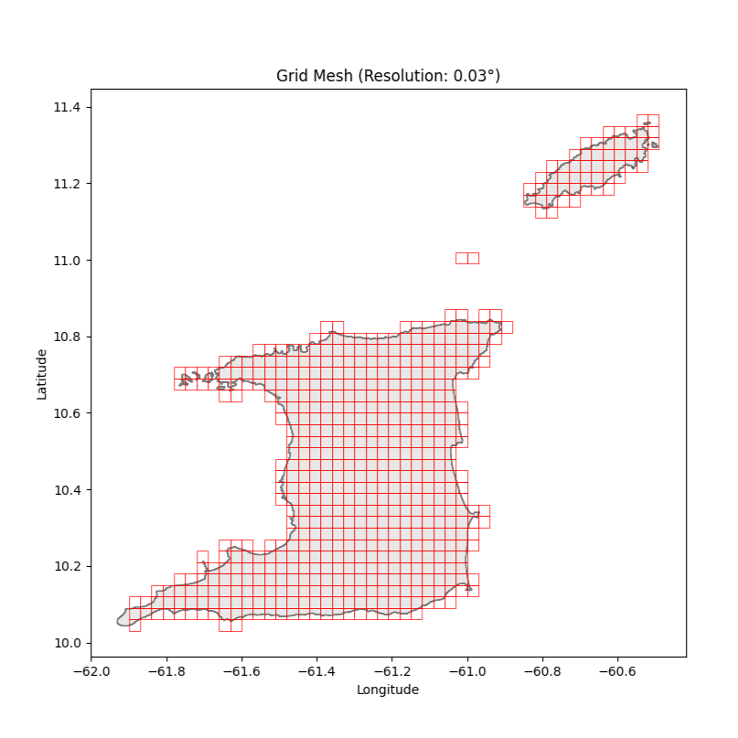
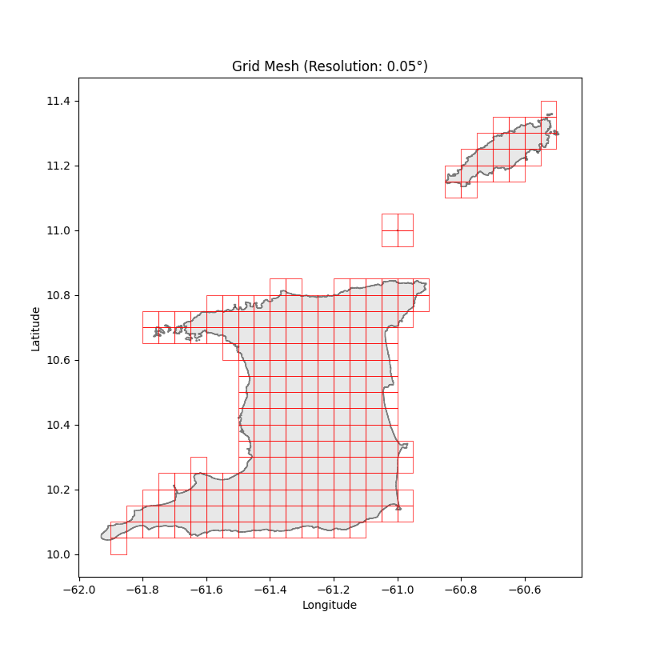
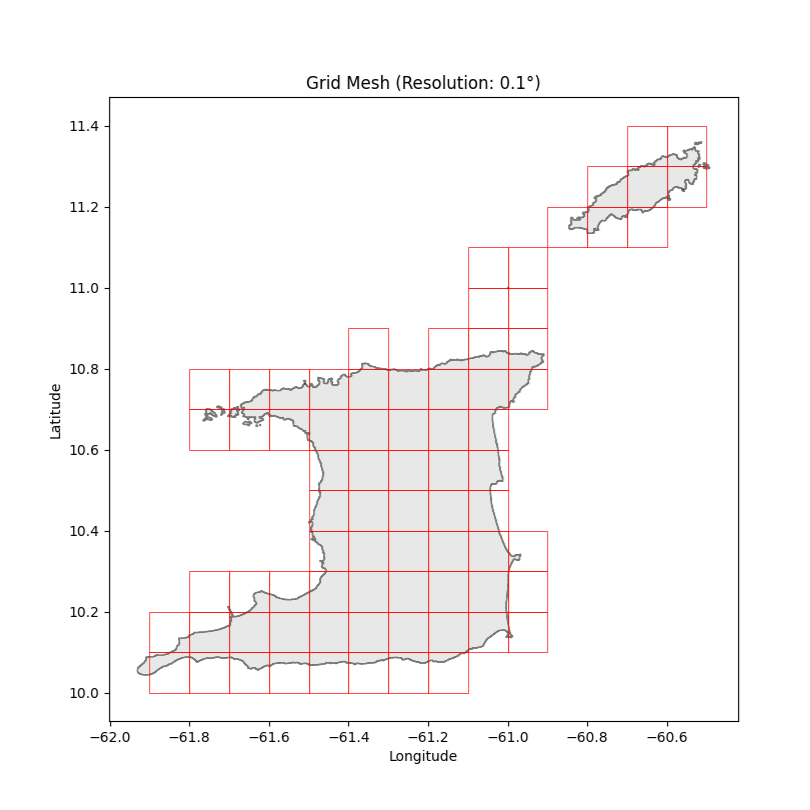

Introduction
Without good data, my causal model will remain as just a hypothesis, and the statistical model that I developed will be useless. As identified in part 2 of this series, to determine how states of emergency (SOEs) affect violent crime rates in Trinidad and Tobago (TnT), I need to construct a panel dataset that outlines the relevant data for each geographic region of Trinidad and Tobago. That data will be the number of violent crimes committed, \(Y_{i,t}\), the number of PDOs executed with lags for \(j\) weeks, \(X'_{i,t}\), and the number of PDOs executed in neighbouring regions with lags for \(j\) weeks, \(S'_{i,t}\).
Data Collection
Rates of Violent Crime
Two crime datasets already cover TnT: one published by the Trinidad and Tobago Police Services (TTPS) (CITE) and another by Crime Hot Spots (CHS) (CITE). The TTPS maintains a public database of reported and detected / solved crimes, compiled from their statistical reports collection. The TTPS dataset aggregates crime by month, police division, and crime type, and spans from 2018 to the present day. CHS on the other hand, creates its public database by monitoring mainstream media outlets, social media posts, and direct community reports. Using automation and human review, they compile these reports into a dataset where each row outlines the type of crime, date that it occurred, and the geographic coordinates where it occurred. Both datasets suffer from their own issues and biases. The TTPS dataset only identifies crimes that were officially reported, may be at risk of government manipulation, and is extremely aggregated. The CHS dataset only identifies crimes that receive media attention and may be prone to errors due to the automation involved. To account for these complications, I intend to replicate my methodology with both datasets.
Execution of Preventative Detention Orders
During an SOE, the TnT government can detain someone using a preventative detention order (PDO) to prevent them from “acting in any manner prejudicial to public safety… .” To do so, the government issues a dated PDO that includes the name and residence of the person being detained, and the government’s justification. A record of these PDOs can be found on the GOVT WEBSITE NAME). Using a custom automated tool, I will access each PDO to build a dataset that outlines when each PDO was executed and where the detainee lived. Using google maps and other online services, I will convert the detainee’s address into longitude and latitude coordinates.
Variable Construction
The Two-Way Fixed Effects, \(\alpha_i\) and \(\lambda_t\)
Recall from part 2 in this series, that \(\alpha_i\) refers to a geographic subdivision of the country, whereas \(\lambda_t\) refers to some period of time during the study. It is tempting to define the geographic subdivisions as cities within TnT and the period of time as individual days. I could define the fixed effects in a variety of other ways however, and each definition will have pros and cons for the statistical power and generalisability of the model. Thus I will define \(\alpha_i\) and \(\lambda_t\) in a variety of ways and compare findings across the variations.
If I define the geographic subdivisions to be too big, such as defining only two subdivisions (Trinidad, and Tobago), then highly local events will become aggregated. High degrees of aggregation will make it harder to identify the effects of PDOs under the network disruption theory (LINK Here), as doing so introduces noise into the analysis. If I define the geographic subdivisions to be too small, such as defining each building as different subdivisions, then I will also be introducing noise as it is unlikely that the geographic data for crime and PDOs is that precise. Another issue, even if the data is that precise, is that most of the buildings throughout TnT will have no activity in them, neither PDOs nor crime. This will also negatively affect the quality of the analysis. To determine the appropriate size of the geographic regions to study, I must balance making the subdivisions big enough so that the data can reliably show that at least some activity has occurred within it, while also making it small enough so that the network disruption theory can reasonably apply. I propose 4 levels of analysis. For the first 3 levels, TnT will be broken up into grid cells all of the same size. In the 1st level of analysis, the cells will be roughly 11.0km2, and in the subsequent analysis they will be 30.4km2 and 121.6km2 (Note: these areas are obtained by dividing Trinidad and Tobago into a grid with lines separated by 0.03, 0.05, and 0.1 of a degree of longitude and latitude). For the 4th level of analysis, I will divide TnT into regions based on police division, of which there are 9.
For similar reasons the temporal divisions need to be chosen with care. For example, if \(\lambda_t\) lasts a year then we’d be making the implicit assumption that a PDO executed on January 1st, 2025, could somehow affect crime rates on December 31st, 2026. Given my causal model, this seems unlikely. Similarly, it is unlikely that detaining a criminal at this moment will affect crime rates in an hour. That would suggest that each criminal commits crime every hour, or that the government detain criminals right before they commit crime. Neither of those assumptions seem realistic. Furthermore, my data is not that precise as both datasets are published daily. I propose 2 interval periods: every 4 days and every week.



Lags
For rigour I will include 2 levels of lags: 4 periods and 8 periods. If the results are consistent across these lags, then they are less likely to be caused by chance.
The Number Of Violent Crimes Committed, \(Y_{i,t}\)
This variable is a raw count on the number of violent crimes taking place in \(alpha_i\) for time period \(\alpha_t\). I will define the “violent” in “violent crime” in two ways, one which includes only the categories of crime that Gangs in The Caribbean (CITE) found to correlate with gang prevalence, and also more loosely as what I think constitutes the notion of “violent crime.”
When using the CHS dataset to construct \(Y_{i,t}\) precisely, I will count the crimes that they’ve categorized as “murder”, “attempted murder,” “shooting,” and “armed robbery.” When defining it more loosely, I will also include the crimes categorized as “home invasion”, “carjacking”, “extortion”, and “kidnapping.” When using the TTPS dataset to construct \(Y_{i,t}\) precisely, I will only include the offences categorized as “murders”, “woundings and shootings”, and “robbery.” When defining it more loosely, I will also include the crimes categorized as “larceny of motor vehicles” and “burglaries and break ins.”
Note that the CHS dataset can provide data for all variations of geographic subdivision, whereas the TTPS dataset can only provide data when analysing at the 4th level (police-divisions).
The Number Of PDOs Executed, \(X_{i,t}\)
This variable is a raw count of the number of PDOs executed in geographic region \(\alpha_i\) for time period \(\lambda_t\).
The Number of PDOs Executed in Neighbouring Regions, \(S_{i,t}\)
This variable is more complex than the others as the causal model doesn’t suggest just one way to define it. \(S_{i,t}\) was introduced to account for the fact that PDOs executed just across the border between neighbouring communities may affect crime rates within the community under consideration. Therefore, I could define \(S_{i,t}\) as the number of PDOs executed outside of \(\alpha_i\) but within its immediate neighbours.
However, if I define \(S_{i,t}\) like that, I’d also be introducing the assumption that some PDO executed 5 metres from the border should have the same effect as one executed 2km from the border as long as it is within the neighbouring community. This is unlikely. For this reason, for each PDO I instead add 1 to \(S_{i,t}\) divided by its distance from the center of \(\alpha_i\). (Note: In reality it is distance + 0.1 to ensure that small distances do not skew \(S_{i,t}\) to infinity.)
Conclusion
Having outlined the datasets to be used and the variables to be constructed, in my next post I will outline my preliminary results.
References
Sources
Pictures
- All diagrams are drawn by me.